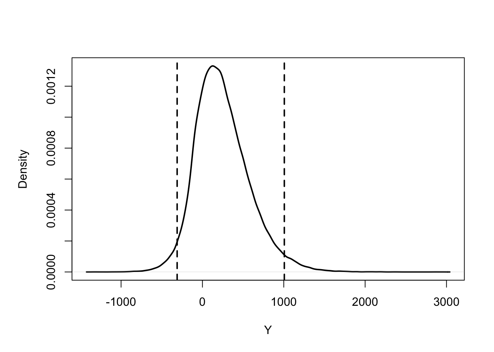

set.seed(61003)
N <- 1000
x <- rnorm(N)
y <- x^2
# Estimate E(Y)
mean(y)[1] 1.046482We consider a model of the form \(y=f(\mathbf{x})\), where \(y\) is a scalar output and \(\mathbf{x}=(x_1,\ldots,x_d)\) is a vector of \(d\) inputs. We suppose that there is a true value of the input \(\mathbf{X}\) such that we would like to know the value of \(Y\) where \(Y=f(\mathbf{X})\), but \(\mathbf{X}\) is unknown. A simple approach might be
Obtain (somehow) a ‘best estimate’ of \(\mathbf{X}\), which we denote by \(\hat{\mathbf{X}}=(\hat{X}_1,\ldots,\hat{X}_d)\).
Estimate \(Y\) by \(\hat{Y}=f(\hat{\mathbf{X}})\).
Do a one-at-a-time experiment to assess uncertainty about \(Y\): for \(i=1,\ldots,d\), compare \(\hat{Y}\) with \(\hat{Y}_{i,+}\) and \(\hat{Y}_{i,-}\), where \(\hat{Y}_{i,+}\) and \(\hat{Y}_{i,-}\) correspond to model runs with the \(i\)th element of \(\hat{\mathbf{X}}\) replaced by \(\hat{X}_i +e_i\) and \(\hat{X}_i -e_i\) respectively, for some appropriate choice of \(e_i\).
This approach is not recommended, for reasons illustrated in the following two examples.
In general, if \(f\) is a nonlinear function of the inputs, we would not expect \(E(Y)\) to be the same as \(f(E(\mathbf{X}))\).
Some further comments.
How do we choose the \(e_i\) terms? Should these correspond to the absolute physical limits of the input parameters? Or should we attempting to judge what values of the inputs are likely? And how should we interpret the results? The one-at-a-time experiment may reveal some outputs that are possible but not necessarily plausible.
Instead of a one-at-a-time experiment, we might consider a factorial or fractional factorial experiment. These can be more efficient for noisy (non-deterministic) physical experiments, but the problems of non-linearity and interpretability remain.
The examples in the previous section have already hinted at a probabilistic approach, but we will now consider this more formally. Given an uncertain \(\mathbf{X}\), the aim is to quantify uncertainty about \(Y=f(\mathbf{X})\) by deriving a probability distribution for \(Y\). This first requires a probability distribution for \(\mathbf{X}\). If suitable data are available that inform us about \(\mathbf{X}\), we may derive a (posterior) probability distribution for \(\mathbf{X}\) using Bayesian inference. Without data, we may instead use expert judgement (so that we simply have a prior distribution for \(\mathbf{X}\)).
We now have a transformation of a random variable \(Y=f(\mathbf{X})\). In very simple cases, given a density function for \(\mathbf{X}\), we may be able to derive the density function for \(Y\), but typically, this will not be possible. (At the very least, we would need a closed form expression for \(f\)). We can instead use a Monte Carlo technique.
Generate a random sample \(\mathbf{X}_1,\ldots,\mathbf{X}_N\) from the distribution of \(\mathbf{X}\).
Evaluate \(Y_1=f(\mathbf{X}_1),\ldots,Y_N=f(\mathbf{X}_N)\).
Use the sample \(Y_1,\ldots,Y_N\) to estimate summaries of the distribution of \(Y\). For example, estimate \(E(Y)\) and \(P(Y\le y)\) by \[\begin{aligned} \hat{E}(Y)&=\frac{1}{N}\sum_{i=1}^NY_i,\\ \hat{P}(Y\le y )&=\frac{1}{N}\sum_{i=1}^NI(Y_i\le y),\\ \end{aligned}\] where \(I()\) is the indicator function.
Because each \(Y_i\) is a random draw from the distribution of \(Y\), we must have \(E(Y_i)=E(Y)\) and \(P(Y_i\le y)= P(Y \le y)\) (in addition to \(Var(Y_i)=Var(Y)\)), so the estimators above are unbiased: \[\begin{align} E\{\hat{E}(Y)\}&=\frac{1}{N}\sum_{i=1}^NE(Y_i)\\&=\frac{1}{N}\sum_{i=1}^NE(Y)\\&=E(Y), \\ E\{\hat{P}(Y\le y )\}&=\frac{1}{N}\sum_{i=1}^NE\{I(Y_i\le y)\}\\&=\frac{1}{N}\sum_{i=1}^NP(Y_i\le y)\\ &=\frac{1}{N}\sum_{i=1}^NP(Y\le y)\\&=P(Y\le y). \end{align}\] The variances of the estimators decrease as we increase \(N\): \[\begin{align} Var\{\hat{E}(Y)\}&=\frac{1}{N^2}\sum_{i=1}^NVar(Y_i)=\frac{1}{N^2}\sum_{i=1}^NVar(Y)=\frac{Var(Y)}{N}, \\ Var\{\hat{P}(Y\le y )\}&=\frac{1}{N^2}\sum_{i=1}^NVar\{I(Y_i\le y)\}\\&=\frac{1}{N^2}\sum_{i=1}^NP(Y_i\le y)\{1-P(Y_i\le y)\}\\ &=\frac{1}{N^2}\sum_{i=1}^NP(Y\le y)\{1-P(Y\le y)\}\\ &=\frac{P(Y\le y)\{1-P(Y\le y)\} }{N}. \end{align}\] If \(N\) is large, we can construct approximate confidence intervals based on the central limit theorem. For example, an approximate 95% confidence interval for \(E(Y)\) would be \[\hat{E}(Y) \pm 1.96 \sqrt{\frac{\widehat{Var}(Y)}{N}},\] where \[\widehat{Var}(Y)=\frac{1}{N-1}\sum_{i=1}^N\{Y_i-\hat{E}(Y)\}^2.\\\]
set.seed(61003)
N <- 1000
x <- rnorm(N)
y <- x^2
# Estimate E(Y)
mean(y)[1] 1.046482# Confidence interval for E(Y)
s.e <- (var(y) / N)^0.5
c(mean(y) - 1.96 * s.e, mean(y) + 1.96 * s.e)[1] 0.9493342 1.1436297# Estimate P(Y<1)
mean(y < 1)[1] 0.677# Confidence interval for P(Y<1)
s.e <- (mean(y < 1) * mean(y >= 1) / N)^0.5
c(mean(y < 1) - 1.96 * s.e, mean(y < 1) + 1.96 * s.e)[1] 0.6480164 0.7059836Increasing N will give better results: the confidence intervals will be narrower, and we expect the estimates to be closer to the true values.
The above technique is used in many disciplines. One area where it is (almost) a requirement is in health economic evaluations conducted for the National Institute for Health and Care Excellence (NICE). Below are some extracts from their guidance:1 (although they have used the term “probabilistic sensitivity analysis” to mean probabilistic uncertainty analysis. We will use the term sensitivity analysis to mean something else).
Some extracts for the guidance are as follows.
A third source of uncertainty comes from parameter precision, once the most appropriate sources of information have been identified […] Assign distributions to characterise the uncertainty associated with [parameter/input] values. The distributions chosen for probabilistic sensitivity analysis should not be chosen arbitrarily but chosen to represent the available evidence on the parameter of interest, and their use should be justified
When doing a probabilistic analysis, enough model simulations should be used to minimise the effect of Monte Carlo error. Reviewing the variance around probabilistic model outputs […] as the number of simulations increases can provide a way of assessing if the model has been run enough times or more runs are needed.
Using univariate and best- or worst-case sensitivity analysis [one-at-a-time experiments] is an important way of identifying parameters that may have a substantial effect on the cost-effectiveness results and of explaining the key drivers of the model. However, such analyses become increasingly unhelpful in representing the combined effects of multiple sources of uncertainty as the number of parameters increase. Using probabilistic sensitivity analysis can allow a more comprehensive characterisation of the parameter uncertainty associated with all input parameters.
We consider a (modified version of a) cost-effectiveness model that was developed to support the National Institute for Health and Care Excellence physical activity guidance2. The model predicts the “incremental net benefit” of an intervention: exercise on prescription (e.g. from a general medical practitioner) to promote physical activity against a ‘do nothing’ scenario. The model assumes that the intervention affects health by reducing the risks of three diseases: coronary heart disease, stroke and diabetes. The health effects included in the model are those that relate to these three diseases, and the model counts costs that accrue as a result of the treatment of the three diseases, as well as those that relate to the intervention itself.
The incremental net benefit describes the value of the intervention per patient treated. Health benefits are converted into money, on an assumption that the NHS can afford to spend up to £20000 to achieve one extra year of life in perfect health for one patient. A positive incremental net benefit means the intervention is cost effective; a negative incremental net benefit means the money would be better spent on something else. Incremental net benefit is modelled for a cohort of patients with average age 50, at the time of the intervention.
The model has 24 uncertain inputs \(X_1,\ldots,X_{24}\). We do not list them all here, but examples include the relative risk of a stroke for an active versus a sedentary population, and the probability of new exercise in the intervention group. Further details and R code are available on Blackboard.
We illustrate a Monte Carlo uncertainty analysis. 100,000 random inputs are drawn from the distribution of \(\mathbf{x}\). The model is run at each input, to obtain a sample \(y_1,\ldots,y_{100000}\) from the distribution of \(Y\). Note the interpretation of \(Y\) here: it is the mean net benefit per patient treated. It is a fixed, uncertain quantity, because it is a function of 24 input values that are unknown.
We find \[\begin{align} \hat{E}(Y)&=\frac{1}{100000}\sum_{i=1}^{100000}y_i=248.5\\ \hat{P}(Y\le 0 )&=\frac{1}{100000}\sum_{i=1}^{100000}I(y_i\le 0)=0.225, \end{align}\] with 95% confidence intervals for \(E(Y)\) and \(P(Y\le 0)\) given by (246.4, 250.6) and (0.223, 0.228) respectively, suggesting that \(N=100000\) is sufficiently large for estimating \(E(Y)\) and \(P(Y\le 0)\) reliably. Hence, although we may estimate that the intervention is cost-effective, based on \(E(Y)\), we are fairly uncertain about this; our probability that the intervention is not cost-effective is about 20%.
To visualise uncertainty about \(Y\), we can plot a (kernel) density estimate using the sample \(y_1,\ldots,y_{100000}\). We mark on the estimated 2.5th and 97.5th percentiles as vertical dashed lines.

The following simple model describes the concentration of pollutant at any point in a region following a release from a point source \[ C(x,y,z,\boldsymbol{\theta})=\frac{Q}{2\pi u_{10}\sigma_z\sigma_y}\exp\left[-\frac{1}{2}\left\{\frac{y^2}{\sigma_y^2}+\frac{(z-h)^2}{\sigma_z^2}\right\}\right], \] where \((x,y,z)\) are the coordinates along the wind direction, cross wind and above ground respectively, and \(\boldsymbol{\theta}\) is a vector of model parameters:
The pollutant is released from a source 50m above ground, with an emission rate of 100 units. However, the wind speed and diffusion parameters \(\sigma_y\) and \(\sigma_z\) are not known exactly, and are considered to be random variables with lognormal distributions: \[\begin{align*} \log u_{10}&\sim N(2,.1) \\ \log \sigma_y^2 &\sim N(10,0.2) \\ \log \sigma_z^2 &\sim N(5,0.05) \end{align*}\]
In R, write a Monte Carlo simulation to estimate the median and 95th percentile of the concentration at coordinates \(x=100, y= 100,z=40\). Use the quantile() function to obtain percentiles from samples. Produce a suitable plot to visualise uncertainty about the concentration.
National Institute for Health and Care Excellence (2022). NICE health technology evaluations: the manual. Available at https://www.nice.org.uk/process/pmg36. See section 4.7 Exploring Uncertainty↩︎
National Institute for Clinical Excellence (2006) Four commonly used methods to increase physical activity: PH2. Technical Report. National Institute for Clinical Excellence, London. (Available from http://www. nice.org.uk/PH2.) The version used in this case study is the model described in Strong, M., Oakley J. E. and Chilcott, J. (2012). Managing structural uncertainty in health economic decision models: a discrepancy approach. Journal of the Royal Statistical Society, Series C, 61(1), 25-45. Thanks to Mark Strong for providing the R code.↩︎